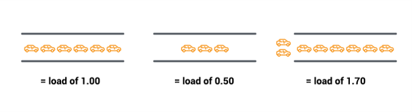
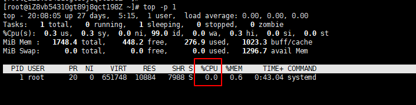
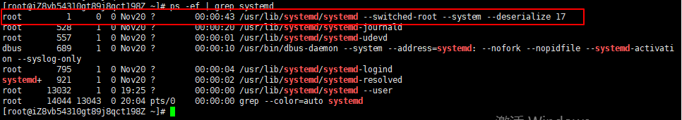

本文介绍Linux常用性能统计分析命令，监控进程或者系统性能。主要包括CPU（top、mpstat）、内存（vmstat、free）、I/O（iostat）、网络性能（sar）、系统日志信息（demsg）、查看进程状态（pidstat）。下面简要介绍这些命令的使用方法。
mpstat、iostat、pidstat和sr命令需要安装sysstat软件包，sysstat包含了系统性能监测工具，安装方法如下：1
2yum install sysstat # CentOS
sudo apt-get install sysstat # Ubuntu
负载
CPU负载（cpu load）指的是某个时间点进程对系统产生的压力。表示特定时间间隔内运行队列中的平均进程数，如果一个进程满足以下条件则其就会位于运行队列中:
- 它没有在等待IO操作的结果
- 它没有主动进入等待状态(也就是没有调用’wait’)
- 没有被停止(例如：等待终止)
单CPU满负荷运行时cpu_load为1，当多个CPU或多核时，相当于大桥有多个车道，满负荷运行时cpu_load值为CPU数或多核数；CPU负载的计算（以单CPU为例），假设一分钟内执行10个任务代表满负荷，当一分钟给出30个任务时，CPU只能处理10个，剩余20个不能处理，cpu_load=3；

单核CPU
- cpu load = 1，满负载运行
- cpu load = 0.5，半负载运行
- cpu load = 1.7，超负载运行
一般来说，每个CPU内核当前活动进程数不大于3，则系统运行表现良好!
- 如果多核cpu，需要累加
- 显示最近1分钟、5分钟、15分钟系统负载的移动平均值，它们共同展现了负载随时间变动的情况。
- 3：正在运行的进程数，166：总的进程数，16903：最近运行进程的ID。
ps和top命令
ps命令
ps命令是Process Status的缩写，用于查看系统进程信息
- -e，-A：显示所有进程，包括其他用户的进程
- -f：显示完整格式
- -l：显示长列表
- -a：所有进程，加上-x参数会显示没有控制终端的进程
- -u：username，显示指定用户的进程，例如ps -u root
- -x：显示当前用户在所有终端下的进程
- -aux：显示所有进程，包括所有用户，分组情况
ps常用用法，通常与grep组合使用
- 显示dhcpd进程
1
ps ax | grep dhcpd | grep -v grep
ps -ef
显示所有进程ps -aux
显示所有进程1
ps -aux
按照CPU或者内存用量来筛选进程：
1
2
3ps -aux --sort -pcpu
# 或
ps -aux --sort -pmem终止进程
1 | 强制中断正在执行的命令，如，命令长时间没有响应的情况下 |
top命令
ps命令列出的是当前进程的快照，top可用于持续监视系统性能，
动态显示进程信息。
- -n 获取多次cpu的执行情况，top -n 4：只更新4次
- -d 间隔时间，top -d 4：每隔4秒更新一次
- -p 获取指定端口进程的数据，top -p 22
每隔1秒检测指定进程的cpu，检测20次
1
top -d 1 -n 20
示例
打印指定pid进程的cpu信息，间隔时间为1s，打印20次

查看进程的pid：
1
ps -ef | grep systemd

循环打印
1
2
3
4
5
6# 打印一次
top -p 1 -n 1 | grep systemd | awk '{print $10}'
# 循环打印20次
for i in {1..20};do top -p 1 -n 1 | grep systemd | awk '{print $10}';sleep 1s;done
for((i=0;i<20;i++));do top -p 1 -n 1 | grep systemd | awk '{print $10}';sleep 1s;done
dmesg | tail
默认显示最新的10个系统信息，可以查看导致性能问题的错误信息。
1. 显示最新的20个系统信息
1 | [root@centos7 ~]# dmesg | tail -20 |
2. 显示开始的20个系统信息
1 | [root@centos7 ~]# dmesg | head -20 |
vmstat 1
全称 virtual memory stat，逐行输出虚拟内存状态统计信息1
2
3
4[root@centos7 ~]# vmstat
procs -----------memory---------- ---swap-- -----io---- -system-- ------cpu-----
r b swpd free buff cache si so bi bo in cs us sy id wa st
1 0 0 1424832 2084 195100 0 0 47 4 45 55 0 0 99 1 0vmstat 1 ：每隔一秒打印一次1
2
3
4
5
6
7[root@centos7 ~]#
[root@centos7 ~]# vmstat 1 #1s打印一个
procs -----------memory---------- ---swap-- -----io---- -system-- ------cpu-----
r b swpd free buff cache si so bi bo in cs us sy id wa st
1 0 0 1424472 2084 195120 0 0 28 2 30 37 0 0 99 1 0
0 0 0 1424456 2084 195120 0 0 0 0 38 53 0 0 100 0 0
0 0 0 1424456 2084
参数解释：
- r: 运行队列中进程数量
- b: 等待IO的进程数量
- swpd：使用的虚拟内存
- free：可用内存
- buff：用作缓冲的内存大小
- cache：用作缓存的内存大小
- us：用户进程执行时间(user time)
- sy：系统进程执行时间(system time
- id：空闲时间(包括IO等待时间)，中央处理器的空闲时间
- wa：等待IO时间
free -m
查看linux内存使用情况1
2
3
4[root@centos7 ~]# free -m
total used free shared buff/cache available
Mem: 1819 199 1471 9 148 1470
Swap: 4095 0 4095
- Mem：物理内存
- totel：总的物理内存 单位为：M
- used：用掉的内存
- free：空闲的物理内存
- shared：共享内存
- buff/cache：缓存内存
mpstat -P ALL 1
mpstat是Multiprocessor Statistics的缩写，实时监控CPU性能。mpstat -P ALL 1 2：间隔1s打印报告，共打印2个
- -P ALL：监控所有CPU
- 1：间隔时间1s
- 2：打印次数2次
1 | [root@centos7 ~]# mpstat |
- %usr：间隔时间段内，用户态的CPU时间（%），不包含 nice值为负进程
- %nice：nice值为负进程的CPU时间（%）
- %sys：核心时间（%）
- %iowait：硬盘IO等待时间（%）
- %irq：硬中断时间（%）
- %soft：软中断时间（%）
- %steal：虚拟机管理器在服务另一个虚拟处理器时虚拟CPU处在非自愿等待下花费时间的百分比
- %guest：运行虚拟处理器时CPU花费时间的百分比
- %idle：CPU的空闲时间（%）
pidstat 1
pidstat用于监控全部或指定进程的资源占用情况，和top命令类似，但不覆盖输出，有利于观察数据随时间的变动情况，top会覆盖之前的输出
pidstat -p 1 1：-p 指定进程号，间隔1s打印pid为1的进程1
2
3
4
5
6
7
8
9[root@centos7 ~]# pidstat
Linux 3.10.0-1062.el7.x86_64 (centos7) 03/18/2020 _x86_64_ (4 CPU)
04:52:29 AM UID PID %usr %system %guest %CPU CPU Command
04:52:29 AM 0 1 0.05 0.19 0.00 0.24 0 systemd
04:52:29 AM 0 2 0.00 0.00 0.00 0.00 3 kthreadd
04:52:29 AM 0 6 0.00 0.00 0.00 0.00 0 ksoftirqd/0
04:52:29- PID：进程ID
- %usr：进程在用户空间占用cpu的百分比
- %system：进程在内核空间占用cpu的百分比
- %guest：进程在虚拟机占用cpu的百分比
- %CPU：进程占用cpu的百分比，各个CPU上的使用量的总和
- CPU：处理进程的cpu编号
- Command：当前进程对应的命令
iostat 1
iostat用于显示CPU和块设备（磁盘I/O）相关的统计信息
1 | [root@centos7 ~]# iostat 1 |
avg-cpu：总体cpu使用情况统计信息
linux各种设备文件在/dev目录下可以看到
- tps：每秒进程向磁盘设备下发的IO读、写请求数量
- kB_read/s：每秒从驱动器读入的数据量
- kB_wrtn/s：每秒从驱动器写入的数据量
- kB read：读入数据总量
- kB wrtn：写入数据总量
sar命令
sar（System ActivityReporter）：系统活动情况报告，
是Linux系统性能分析工具。可以用来分析磁盘I/O、CPU效率、内存使用等，下面介绍它的分析网络性能用法。
sar -n DEV 1
检查网络流量的工作负载，可用来检查网络流量是否已经达到限额。1
2
3
4
5
6
7[root@centos7 dev]# sar -n DEV 1
Linux 4.18.0-147.5.1.el8_1.x86_64 (iZ8vb54310gt89j8qct198Z) 12/19/2020 _x86_64_ (1 CPU)
08:08:37 PM IFACE rxpck/s txpck/s rxkB/s txkB/s rxcmp/s txcmp/s rxmcst/s %ifutil
08:08:38 PM eth0 4.00 2.00 0.23 0.27 0.00 0.00 0.00 0.00
08:08:38 PM lo 0.00 0.00 0.00 0.00 0.00 0.00 0.00 0.00
08:08:38 PM docker0 0.00 0.00 0.00 0.00 0.00 0.00 0.00 0.00
sar -n TCP 1
显示TCP连接情况，可用来描述系统负载1
2
3
4
5
6
7
8[root@centos7 dev]# sar -n TCP,ETCP 1
Linux 4.18.0-147.5.1.el8_1.x86_64 (iZ8vb54310gt89j8qct198Z) 12/19/2020 _x86_64_ (1 CPU)
08:15:48 PM active/s passive/s iseg/s oseg/s
08:15:49 PM 0.00 0.00 1.00 1.00
08:15:48 PM atmptf/s estres/s retrans/s isegerr/s orsts/s
08:15:49 PM 0.00 0.00 0.00 0.00 0.00
- active/s：主动连接数，本地每秒创建的TCP连接数
- passive/s：被动连接数，远程每秒创建的TCP连接数
- retrans/s：每秒TCP重传次数
本文标题:Linux常用命令：性能命令
文章作者:hiyo
文章链接:https://hiyongz.github.io/posts/linux-shell-performance-command-guide/
许可协议:本博客文章除特别声明外，均采用CC BY-NC-ND 4.0 许可协议。转载请保留原文链接及作者。